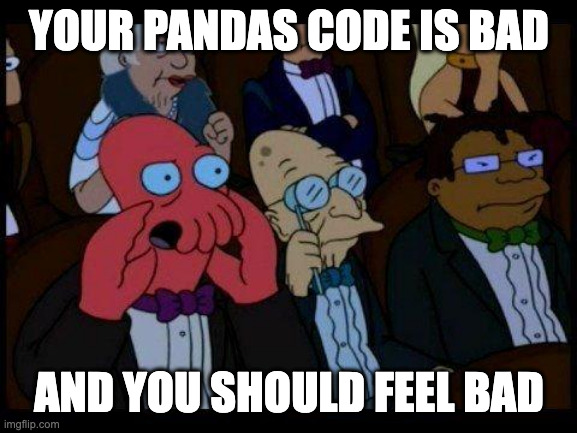

That’s it! Three times! The third time is the charm as they say!
It has been three times, THIS VERY WEEK, that I’ve been pulled into a meeting because someone had a performance problem with their pandas code. Each time it’s the same problem: some kind of genius decides to remove all safety belts, starts hacking and typing until their code regurgitates something. Then that person just hopefully and magically wishes that it will produce the expected outcome. Well, the outcome is me being called, and I’m deeply aggravated:
IF YOU HAVE FOR LOOPS IN YOUR PANDAS CODE, YOU ARE WRONG!
There, I said it…
The not so good
The first time was a young data analyst who produced a notebook to perform some anomaly detection on curves. It was running slow even though it was running on a GCP machine that could probably crack half of the Internet passwords in an hour. The first rookie mistake was trying to plot about 500 examples of curves with about 5000 points per curve because the sampling rate is under a millisecond. I mean, plotly is a great library, no doubt about it, but that is a lot of things to print on your screen. The machine breathes a sigh of relief…
But the signs of abuse were deeper. I will overlook the code blocks with a width on screen of 700 characters because everyone loves to scroll right and left (Please just run ruff on your notebooks). I will purposely ignore the function that does data pre-processing AND plotting, for now… But I cannot turn a blind eye to the double-nested for loop with print statements every 10ms and in-place modification of your gigantic dataframe that propels your machine into locked-in syndrome.
Alright, nothing that can’t be fixed with a little bit of explanation and starting from the basics: down-sampling large data, method chaining in pandas, use vectorization it is your friend, and no for loops, please.
The bad
The second time felt awfully similar. I got called for support by a senior contractor because their code on our MLOPS pipeline in Vertex AI had crashed, apparently due to an out-of-memory error. For those who don’t know, Vertex AI is a GCP service that allows you to run machine learning jobs, using Kubernetes under the hood, so basically you can scale up the machine running your job quite a bit. Any data scientist would think logically that the thing crashed during the training, but it was the prediction part that had crashed, AFTER RUNNING FOR TWO DAYS!
What kind of unholy job are you guys running there? Ah, you’re running a PyTorch model to classify texts, great! Are you trying to classify the whole internet for it to take this long? What’s the size of your dataset? 20K text samples and the whole size is around a few 100s MB? Mother… I don’t know how you’re doing it, but you really managed to mess this one up. In the absolute worst case, this should run in a matter of hours, not days!
Alright! Time to deep dive and see what ungodly horrors lie at the bottom of this…
My good sir, I thank you for creating functions, but yours are 50+ lines long, take 10 different arguments, and modify things in place… I hope you have tests for this (who am I kidding) … Anyway, where is your logic for the prediction? … Within a class with snake-case naming, not the worst thing I will see today, I am sure… Ah, this is the meat of all, the “predict” method… And…
NO! GOD! NO! PLEASE! NO!
You sir, are guilty of the sin of abusing the for loop and pd.concat pattern. Don’t tell me you are redoing this for each line of your dataframe? Of course you are! Are you even aware that for each line you are basically writing a whole new dataframe, which according to you is several 100s MB, that contains just an extra prediction compared to the old one, then doing an in-place operation to replace the old one, and you are wondering why your code takes this long? You’re not even wondering because it did not occur to you that such a job running for several days was a horrible mistake. Oh, and by the way, do you know that you have a triple-nested for loop here in this sub-function of your method “predict”?
Yeah, this thing is going places.
There is nothing sacred anymore
The pinnacle of incompetence was definitely reached by a few members of a consulting firm, you know one of the BIG players that sell their meat “highly trained experts” for a modest 2000-4000 dollars a day. Same scenario, I get added to a meeting whose objective was to determine if the MLOPS pipeline we developed can accommodate scaling up the model they developed because currently their prediction is taking 3-4 hours and they have only implemented 1 of the 100 possible cases. Obviously, it will be very difficult to run the job for all cases within a day. Obviously, they are using the largest machine they can for their Vertex AI job. Obviously, they are trying to say that their “high-end” solution is in danger, although we paid a hefty price for it. Obviously, it’s about blame shifting. Sadly, for them, I already know that they are full of shit.
The first reason is that a few days ago, I had already heard of one of their “great” engineers reaching for help because his highly efficient unit tests were not working in the CI because he did a bunch of calls to Google Storage and BigQuery in them. Calling the database in unit tests, genius… But the second and most important reason why they are full of shit is my secret weapon. It is because our generic MLOPS pipeline does quite a bit between jobs but almost nothing within the job per se, just a little bit of I/O at the start and the end, everything else is just the logic implemented by the “customer” data scientist. In other words, if things go sideways during the job, then you sir, you are the problem! Sorry, I’m not sorry.
Let’s speed up the next 25 minutes of the discussion:
So, let’s see the logs… Apparently, so you have about 100 configurations and for every one of them you’re spending many minutes in method X doing some preprocessing… let’s pull up the corresponding code… And…
NO! GOD! NO! PLEASE! NO!
1default_dict_of_df : dict[str, list[pd.DataFrame]] = ...
data_per_provider = {"total": [], **default_dict_of_df}
for provider in dataset["provider"].unique():
provider_df = dataset[dataset["provider"] == provider]
data_per_provider["total"].append(
2 generate_feature_time_series(
provider_df, date_index, provider
)
)
for feature in list_of_feature:
3 for value in provider_df[feature].unique():
data_per_provider[feature].append(
4 generate_feature_time_series(
5 provider_df[provider_df[feature] == value],
date_index,
provider,
feature=feature,
value=value,
)
)
provider_stocks_dfs = {
feature: pd.concat(data_per_provider[feature], axis=0)
for feature in ["total", *list_of_feature]
}- 1
- Just the type of this thing sounds already like a bad idea
- 2
- Two pivot and two reindex operations in there. Bye bye performance…
- 3
- Triple for loop nesting, aka. the speeding ticket of computer!
- 4
- Again, two pivot and two reindex operations in there. Bye bye performance…
- 5
- Notice calling the same function with a different granularity, pure art!
Yeah, triple-nested for loops, combined with apply-pivot-append operations with concatenation in the end, if this was figure skating you would probably score lots of points. Too bad you are trying to do data science.
In the end, a team of so-called “expert” consulting engineers wrote something so egregious it threatened the whole project. Any junior writing such a thing should be taught better. None of them bothered to check the logs to investigate the issue. Oh, and by the way, the huge machine they were using was running at 20% of CPU and RAM load all the time, they did not check that either! Oh and they did the same mistake in two places within the codebase, so now we have to wait twice as much.
I guess shipping garbage that barely works is definitely a good way to get your contract renewed and be paid to continue maintaining it… But this is a different story.
Final thought:
So please kids, do not abuse your pandas. Keep them safe from the bad influence of for loops. Believe me, it’s much easier to make your code not suck rather than spending days trying to optimize a clunky piece. I fully agree here with what Casey Muratori says about non-pessimization and this needs to be heard everywhere:
Non-pessimization, it’s simply not introducing tons of extra work for the computer to do!
Disclaimer:
The style of this post may remind some of you of the comrade Ludicity and I must confess I am a deep fan and an active reader of his work.
Though I tried not to imitate his style too much, this post MUST be a strong rant because some things need to be said out loud. Also, because of my own swearing nature and my shortcomings in writing, I doubt that I managed efficiently to do so. Ludicity, if you’re reading this, I apologize deeply.